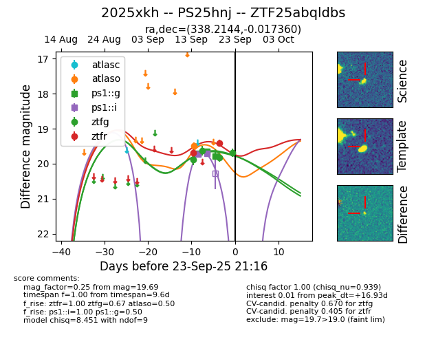
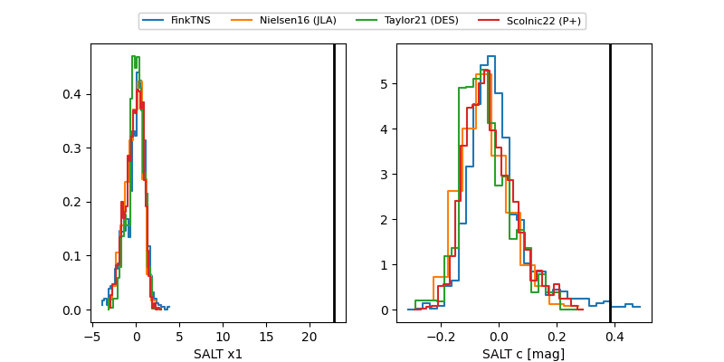

FINK: ZTF25abqldbs
Lasair: ZTF25abqldbs
ALeRCE: ZTF25abqldbs
TNS: 2025xkh
YSE: 2025xkh
ZTF25abqldbs (ztf,fink)
2025xkh (tns,yse)
PS25hnj (panstarrs)
equatorial (ra, dec) = (338.2144,-0.01736)
galactic (l, b) = (66.3328,-47.08143)


last atlaso=19.49, ps1::g=19.78, ps1::i=19.71, ztfg=19.69, ztfr=19.42
1 atlaso, 3 ps1::g, 2 ps1::i, 4 ztfg, 2 ztfr detections